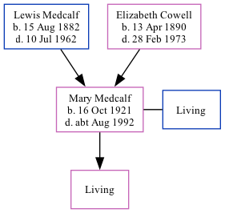

Mary Helen Palmer (née Medcalf) 1921 - c1992
[ Home ] | [ Calendar ] | [ Surnames Index ] | [ Family History ]A clerk and the daughter of Lewis Medcalf (a house decorator) and Elizabeth Cowell (a dressmaker), Mary Medcalf, the fourth cousin once-removed on the mother's side of Nigel Horne, was born in Medway, Kent, England on Oct 16, 19211,2,3 and. She married Frederick G W Palmer (with whom she had 1 surviving child) in Chatham, Kent, England around Nov 19434. On Sep 29, 1939, she lived at 94 Rochester Avenue, Rochester, Kent1.
She died c. Aug 1992 in Kensington, London, England3.
Parents
- Lewis Spencer was born on Aug 15, 1882
- Elizabeth Mabel was born on Apr 13, 1890
Citations
- 1939 Register - Findmypast (was the daughter of the head of the household)
- England & Wales births 1837-2006 - Findmypast
- England & Wales deaths 1837-2007 - Findmypast
- England & Wales Marriages 1837-2005 - Findmypast
Media
England & Wales births 1837-2006 - BMD/B/1921/4/AZ/000945/081
England & Wales marriages 1837-2008 - BMD/M/1943/4/AZ/000718/088
1939 Register - TNA/R39/1772/1772G/016/19
England & Wales deaths 1837-2007 - BMD/D/1992/7/79185134
Family Tree
Generated by Ged2Site. Last updated on Jul 20, 2025